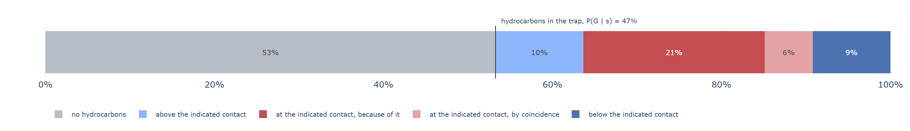
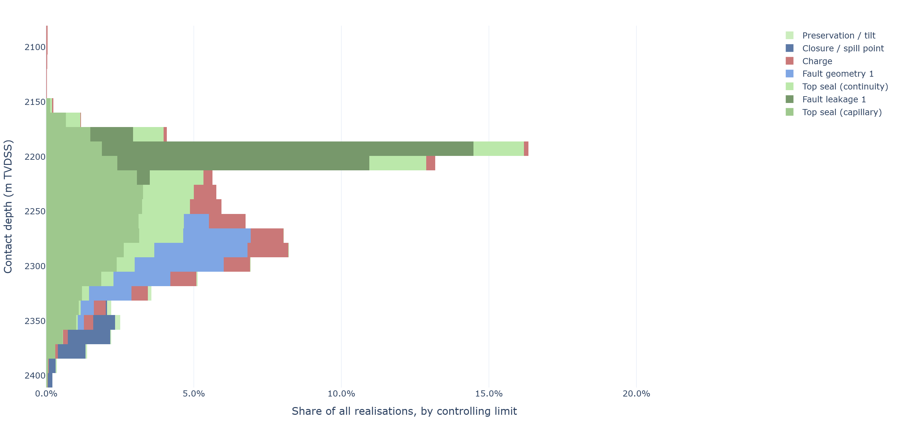
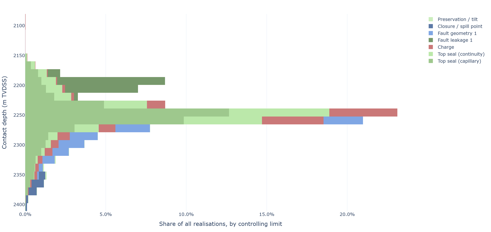
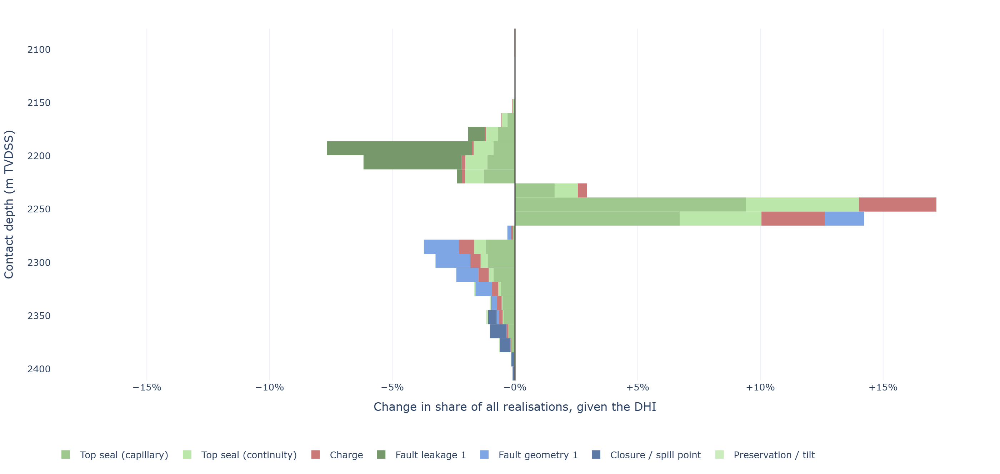
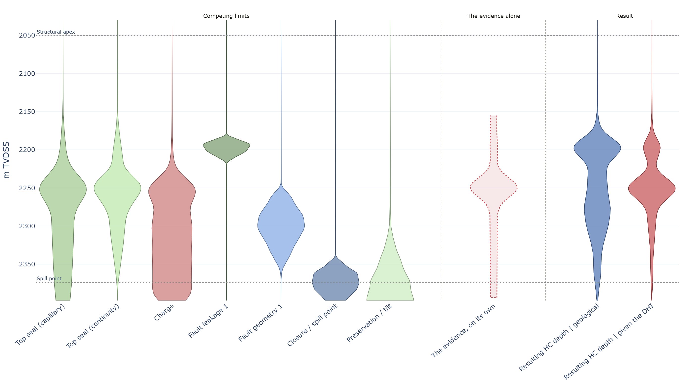
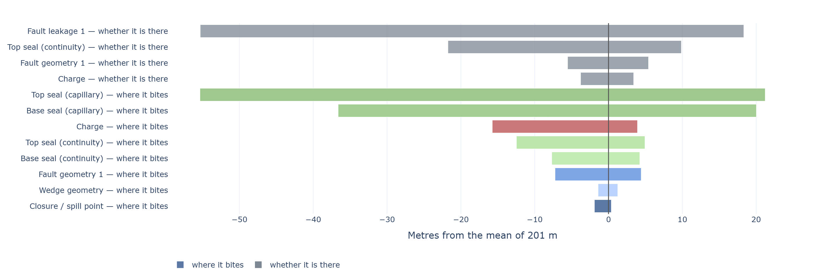

HCWC Distribution Builder
From geological mechanisms and DHIs to contact distribution, risk and much more — all in one model.
by Lars Hjelm
The idea
Don't specify the HCWC — derive it from the geology.
- The tool models the mechanisms that can stop a column. Each defines its own limit.
- In every realisation all limits are sampled; the shallowest active one sets the contact.
- Across many realisations the distribution emerges from the competition — not from a shape somebody chose.
- A DHI enters afterwards as evidence over the same realisations (panels 4 and 5), never as a replacement contact.

How the tool works
Define the prospect
Apex, spill, the element chances giving P(G), the assessment minimum, the well. Tab 2.0.
Elicit each limit
A capacity in metres below the crest, a mapped surface as a depth — whichever the geologist knows. Tab 3.0.
Run the competition
Each limit drawn for presence and depth; the shallowest active one sets the contact and is recorded. Tab 4.0.
Add DHI evidence — optional
The same realisations are reweighted. No second model, no arbitrary "DHI case". Tab 5.0.

Minimum, not a blend — a limit only changes realisations that reach it. Blending a deep leak into a background distribution can make a prospect look larger.
Key outputs
- The HCWC distribution, and which mechanism controlled each realisation.
- Probability of success at every depth, read at the assessment minimum and at the well.
- A curve per risk element, for the volumetric tool downstream.
- All of it off one sample, so there is nothing to reconcile afterwards.


Character vs geometry
One observation, two kinds of evidence — each updating exactly one factor.
The two answer different questions and have different consequences. A bright, conformable response raises the chance that anything is there without saying where the column ends; a confidently picked flat spot says where it ends without saying whether it is hydrocarbons. Collapsed into one number, a single judgement has to do both jobs — and the usual result is a contact moved on the strength of amplitude character, or a chance raised on the strength of a pick.
Are hydrocarbons present?
Amplitude, polarity, conformity, offset behaviour, placed on the evidence index. Updates the chance; never moves the contact.
Where does the column end?
The picked depth and the confidence in it, as a likelihood over realisations already drawn. Reshapes the contact; never moves P(G).



DHI — update, don't replace
A seismic indication is evidence, not a separate case.
- The existing geological realisations are reweighted, not re-simulated.
- Each keeps its controlling limit, so prior and posterior are comparable figure for figure.
- How far the answer moves follows from the strength of evidence stated, not from a decision to believe the DHI.

Self-normalised importance sampling: the posterior is the same sample, reweighted.




What it is not. Substituting a DHI contact depth treats an observation as a scenario — and a scenario cannot be argued with on geological grounds.
The empirical check
Filled-to-spill discoveries are right-censored, not measurements.
- Such a pool says the seal held at least the trap height — not what it could have held.
- Treated as exact values they bias a fit toward structural spill; dropping them trades one bias for another.
- The record is compared, never joined. A disagreement is a finding to explain, not a correction to apply.


Keep these three apart
Merging them is where most of the confusion in this area comes from. Every probability the app prints says which it is, whether it includes P(G), and the threshold it was read at.
| Quantity | What it is | Conditional on |
|---|---|---|
| P(G) | An accumulation exists at all — the elements worked at the crest. | Nothing |
| F(h) = P(H ≥ h | G) | The column reaches h, given an accumulation. What the limits produce. | An accumulation |
| POS(h) = P(G) × F(h) | Hydrocarbons found at that depth — the product, and what an explorer wants. | Nothing |
The commonest error. Quoting the conditional curve as the prospect's chance sets P(G) to 1 and overstates the prospect by 1 / P(G) — largest exactly where the geology is least certain.
Monotonic by construction
A deeper contact cannot be likelier than a shallower one — every point is read off one sample. A band-by-band array has no such guarantee.
Uncertainty is not influence
A wide range can rarely decide the answer; a narrow one that usually decides it moves everything. Both are reported, separately.
Know what the answer rests on
Effective sample size says how concentrated the weighting became; the sensitivity says which input carries it. Where a typed DHI number moves the answer further than the geology does, the posterior is a statement about the seismic assumptions rather than about the prospect.
Absence is evidence, conditionally
A missing anomaly counts only in so far as that column would have been detectable. The ceiling on D(h) is below 1 by construction.
Where the elicitation effort belongs
How often a limit controls the contact is not how much it moves the answer.
- A limit can set the contact in most realisations and still barely move the mean, if its range is narrow.
- A limit that rarely controls can move it a long way, if the range it would impose is wide.
- Elicitation effort belongs on the bars at the top; a limit near zero can stay at a rough value.

Read it before the elicitation, not after. It says which two or three numbers are worth a workshop, and which can stay as they are.
The whole model, in one line
Charge, reservoir, closure, retention.
Spill, charge, seal capacity and continuity, fault leakage, mechanical failure, pinch-out.
Emerges from the competition, with the controlling mechanism recorded.
The product, read at the minimum and at the well — then updated by evidence.

What it is not. Not a basin, hydrodynamic or 3D flow model. Where a more detailed model exists, its output enters as one more competing limit.